Digital Art
This is a Digital art that i was doing during my senior high days and my reference here is Catriona Gray, but it is still work in progress.
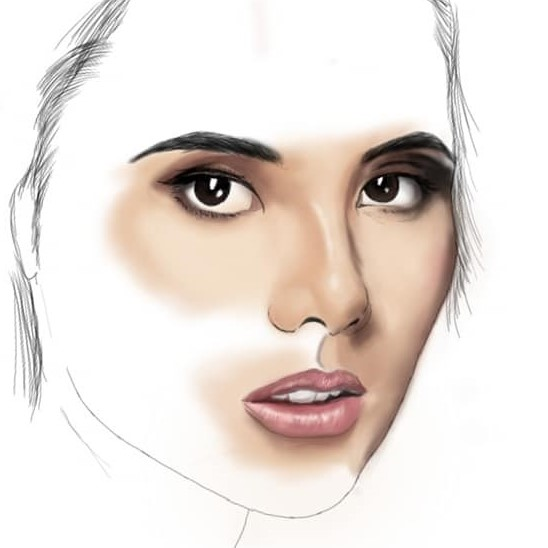
Invert Art
Inverted Art are style of art where you will draw reverse reference and then use inverted filters to see the beauty of the art.
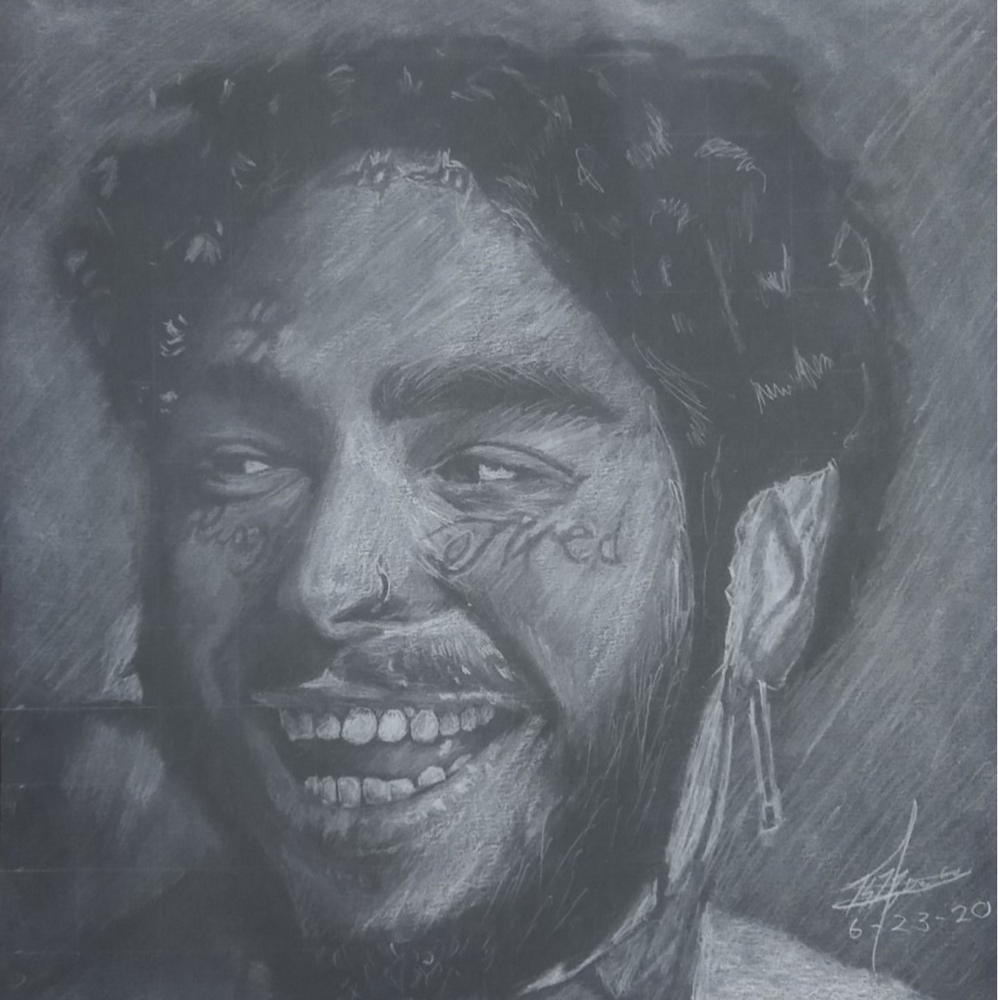
Photo Edit
Here is one of my photo manipulation. I turn the real place into a anime world with the use only of my mobile applications.
Digital Art
It was an self reference Digital Art Where I use AutoDeskSketchbook that time. It is very time consuming but worth it.
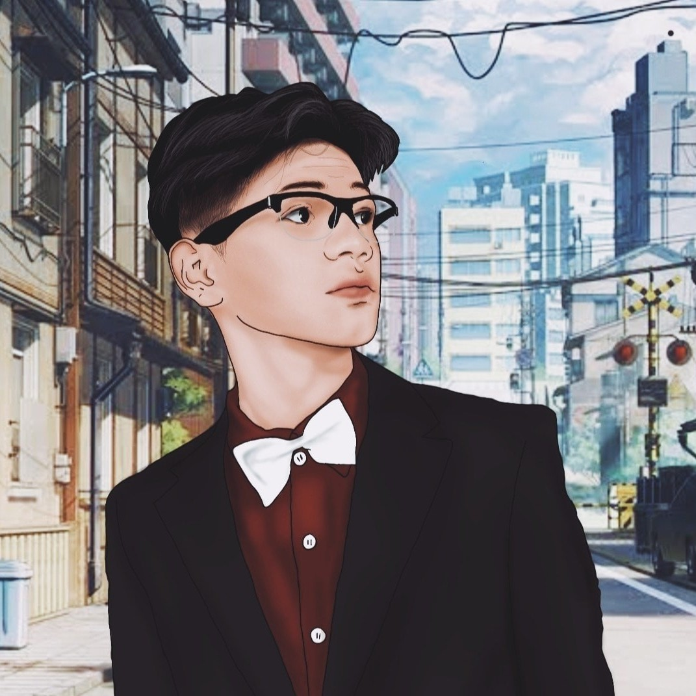
Sketch
It was me again but the style is free hand sketch. the material I used here was normal pencil and just a peace of paper.
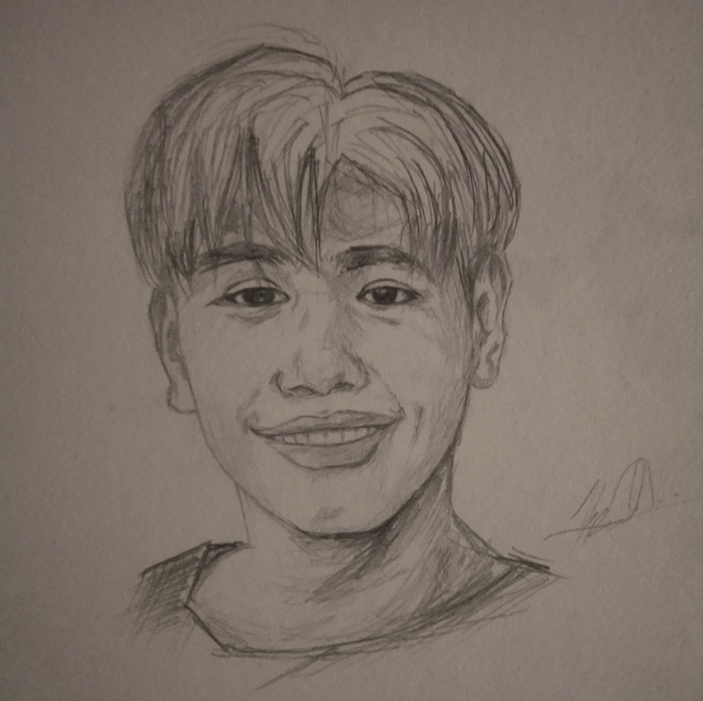
Sketch
It is an also sketch. I draw this during pandemic with the use of pencil and a peace of paper. its not that good but still pleasing.
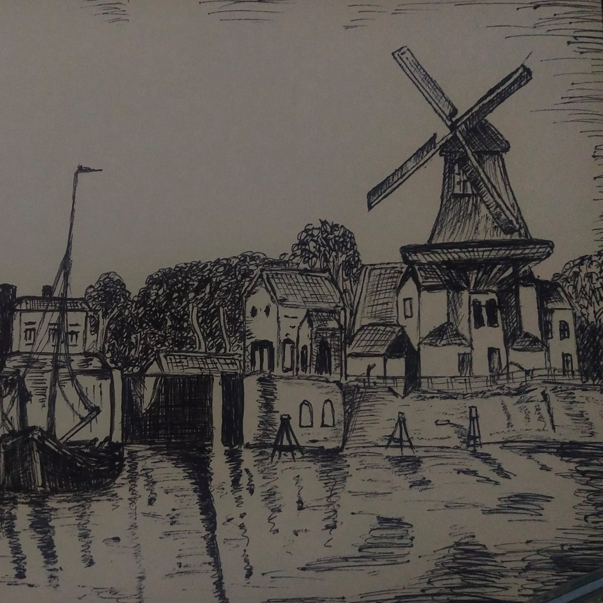
Digital Art
This is digital art of Charlie Puth. I made this during his famous song "Marvin Gaye" and he is so popular that time.
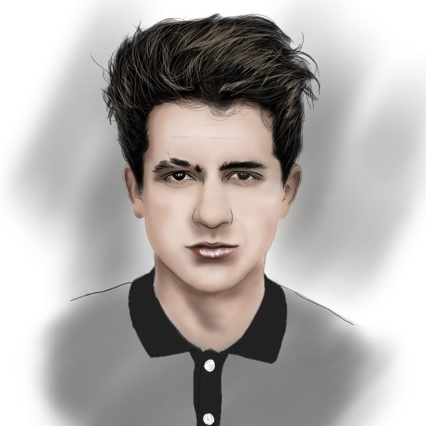
Logo
I also made a logo with the use of Picsart, this is me i made this for my project, as my logo of the product.
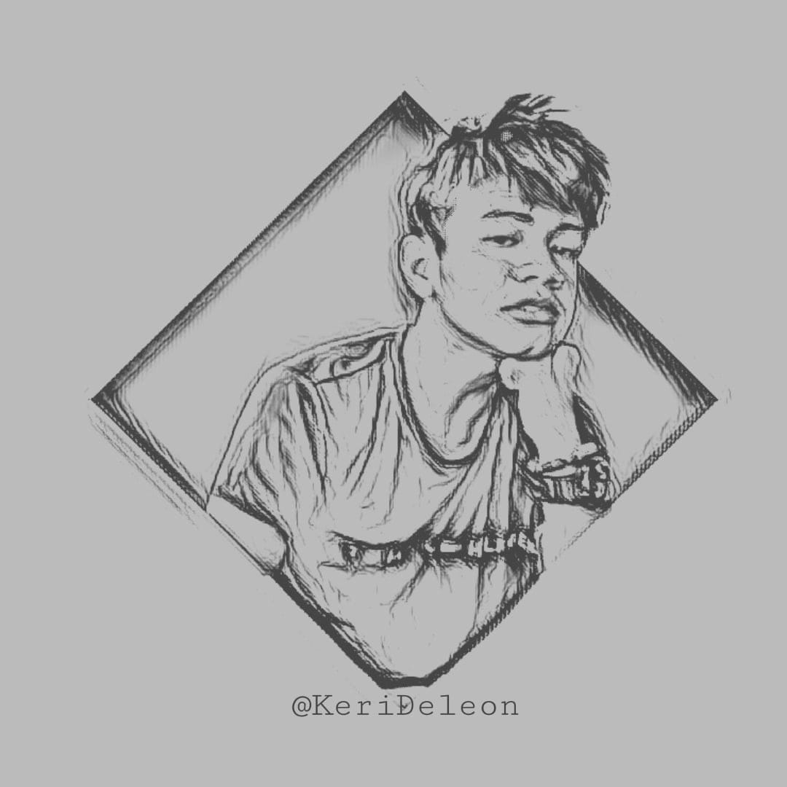
Victor Art
It was me and my friends after the practice of our Junior and Senior nights. I draw this as my gift to my friend.
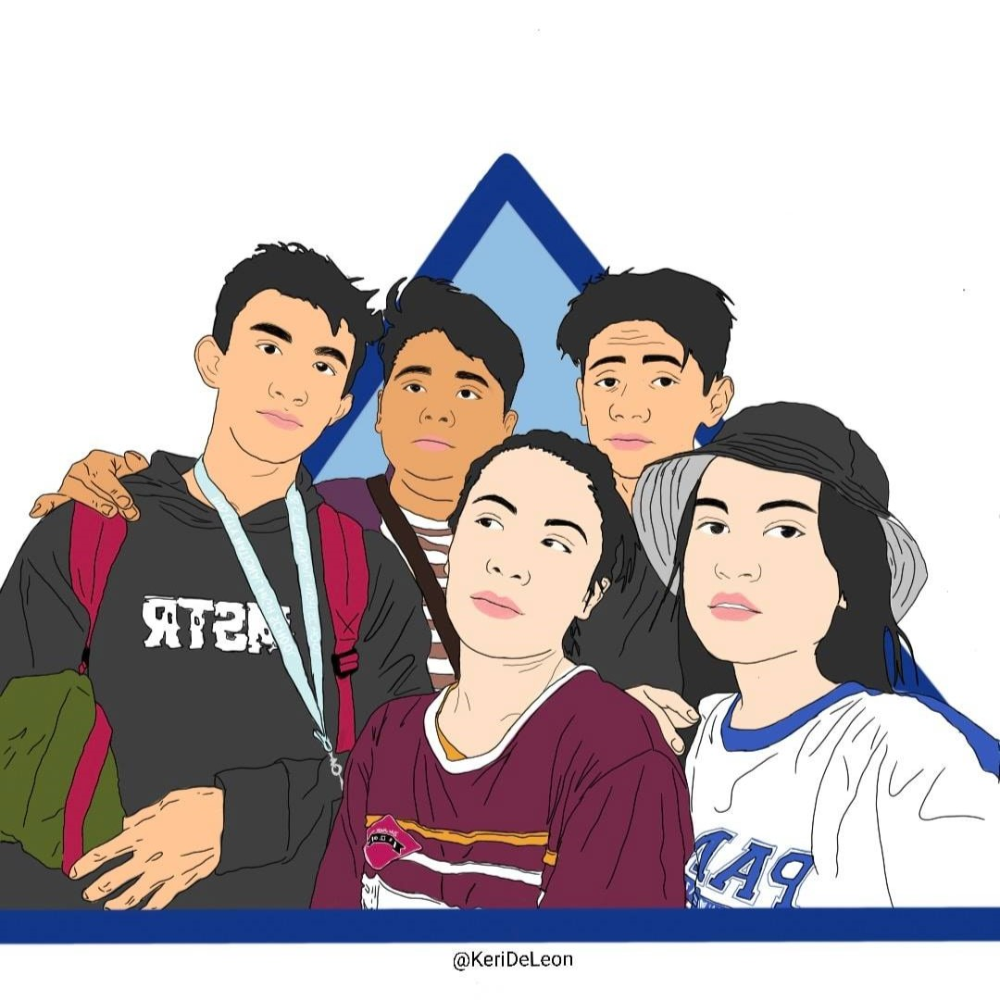
Victor Art
This is John Wick a popular from american action series. I draw this during the foundation day of our school during my highschool days.
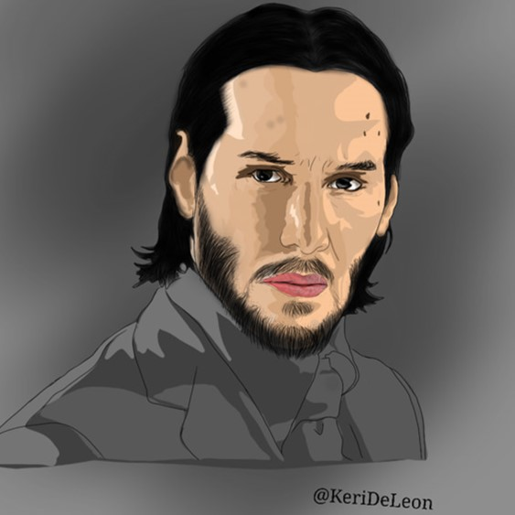
Portrait
This is my best portrait. He is V from the famous boy band in South Korea BTS. I just draw him for enhance my skills in portrait.
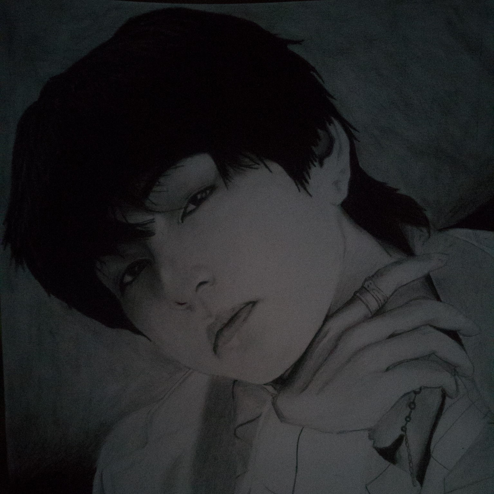
Victor Art
Victor art of my self. I draw this because I was inspired that time after I saw some art in the Art festival during my highschool days.
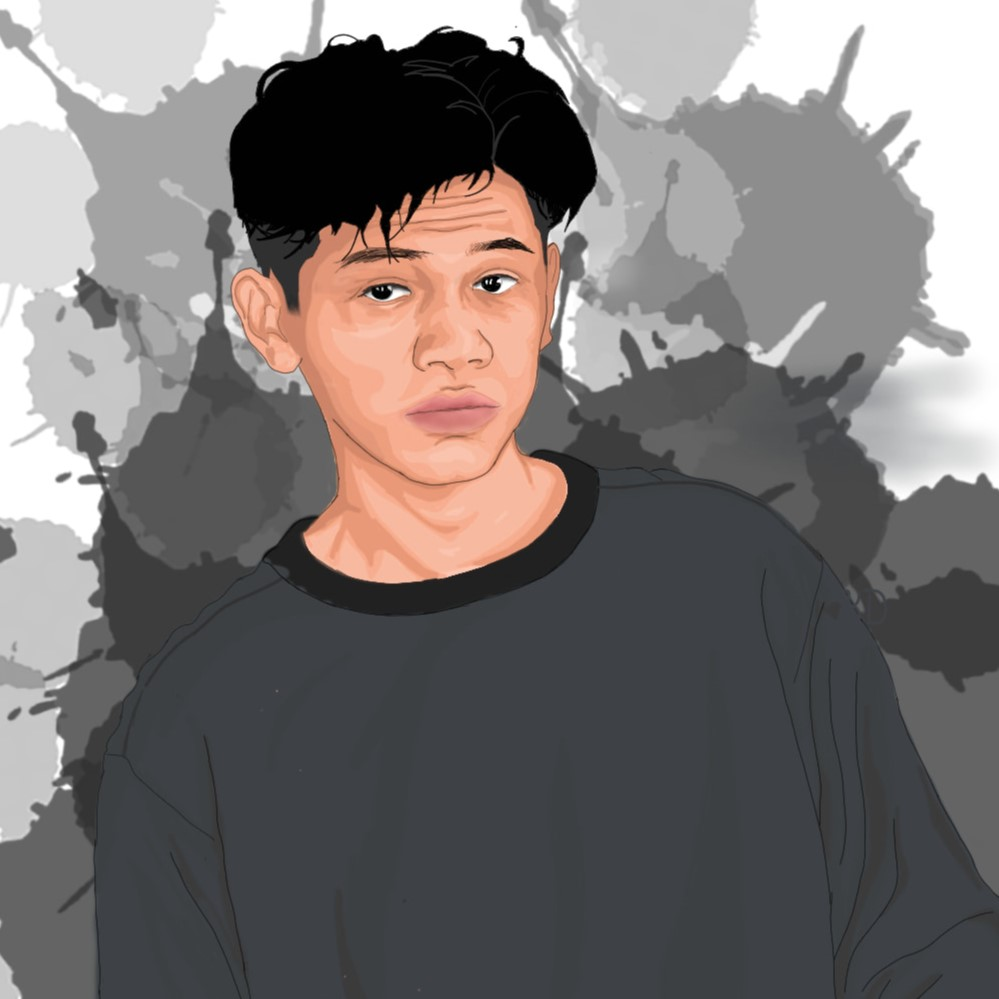